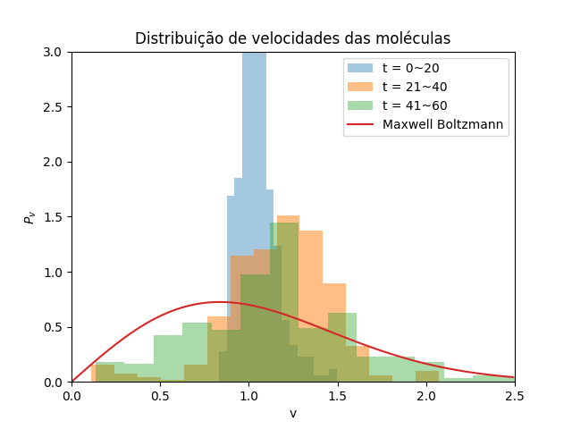
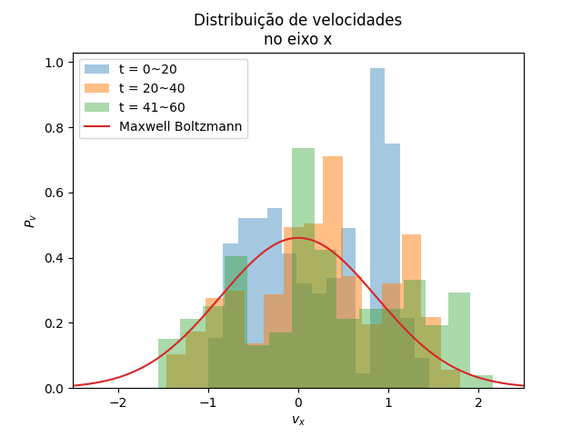

Dinâmica Molecular
Edgard Macena Cabral Nº 11820833
Maio 2023
Introdução
Buscamos estudar dinâmica molecular através de um sistema com contorno periódico e força entre as moléculas dada pelo potencial de Lennard Jones
\begin{equation} f_{ik}(r) = 24\epsilon\left[\left(\frac{\sigma}{r}\right)^{13} - \left(\frac{\sigma}{r}\right)^7\right] \end{equation}
Onde tomamos \(\epsilon = 1\) e \(\sigma = 1\).
Tarefa A
Na tarefa A, executamos um programa de dinâmica molecular com um número de moléculas \(N = 20\), velocidade inicial \(v = 1\) com sentidos aleatórios, e comprimento \(L = 10\).
Programa
O programa usado está a seguir
module DinamMolecularModule
implicit none
type, public :: molecula
real(8) :: x(-1:1), y(-1:1)
real(8) :: v_x, v_y
real(8) :: a_x, a_y
contains
procedure :: alteraPosicao, escreveMolecula, alteraVelocidade
end type molecula
real(8), parameter :: dt = 0.02, L = 10, m = 1, pi = acos(-1d0), v = 1d0
integer, parameter :: N = 20, ioMoleculas = 1, ioEnergia = 2, ioVelocidade = 3
type(molecula) :: moleculas(N)
contains
subroutine alteraPosicao(este)
class(molecula) :: este
real(8) :: proxX, proxY, qntUltrapassou
proxX = 2*este%x(0) - este%x(-1) + este%a_x*dt**2
qntUltrapassou = floor(proxX/L)*L
este%x(1) = proxX - qntUltrapassou
este%x(0) = este%x(0) - qntUltrapassou
este%x(-1) = este%x(-1) - qntUltrapassou
proxY = 2*este%y(0) - este%y(-1) + este%a_y*dt**2
qntUltrapassou = floor(proxY/L)*L
este%y(1) = proxY - qntUltrapassou
este%y(0) = este%y(0) - qntUltrapassou
este%y(-1) = este%y(-1) - qntUltrapassou
end subroutine alteraPosicao
subroutine escreveMolecula(este, indice)
class(molecula), intent(in) :: este
integer :: indice
write(ioMoleculas, *) este%x(0), este%y(0), indice
end subroutine
subroutine alteraVelocidade(este)
class(molecula) :: este
este%v_x = (este%x(1) - este%x(-1)) / (2*dt)
este%v_y = (este%y(1) - este%y(-1)) / (2*dt)
end subroutine alteraVelocidade
real(8) function energiaCinetica()
integer :: indice
real(8) :: v_x, v_y
energiaCinetica = 0.d0
do indice = 1, N
v_x = moleculas(indice)%v_x
v_y = moleculas(indice)%v_y
energiaCinetica = energiaCinetica + 0.5d0*m*(v_x**2 + v_y**2)
end do
end function energiaCinetica
! inciaMoleculas
! Divide L numa grid de N quadrados com
! espaçamento L/sqrt(N)
subroutine iniciaMoleculas()
real(8) :: x, y, teta, numAleatorio, v_x, v_y
integer :: indice
integer, parameter :: sqrtN = ceiling(sqrt(1d0*N))
real(8), parameter :: dist = L/sqrtN
do indice = 1, N
call random_number(numAleatorio)
x = mod(indice, sqrtN)*dist + (1 + 0.5d0*rand())*dist/2
call random_number(numAleatorio)
y = ceiling(1.d0*indice/sqrtN)*dist - (1 + 0.5d0*rand())*dist/2
! write(*,*) x,y
call random_number(numAleatorio)
teta = 2*pi*numAleatorio
v_x = v*cos(teta); v_y = v*sin(teta)
moleculas(indice)%x = x
moleculas(indice)%y = y
moleculas(indice)%v_x = v_x
moleculas(indice)%v_y = v_y
! write(*,*) v*cos(teta), v*sin(teta), v*cos(teta)**2 + v*sin(teta)**2
moleculas(indice)%x(-1) = x - v_x*dt
moleculas(indice)%y(-1) = y - v_y*dt
moleculas(indice)%a_x = 0d0
moleculas(indice)%a_y = 0d0
end do
end subroutine iniciaMoleculas
subroutine evoluiSistema(indice)
real(8) :: r, seno, coss, a_ik
real(8) :: energiaPotencial, velocidade(N)
integer :: i, k, indice
if ( mod(indice-1,3) == 2) then
do i = 1, N
call moleculas(i)%escreveMolecula(i)
end do
else if ( mod(indice-1, 20) == 0 ) then
write(ioVelocidade, *) velocidade
end if
energiaPotencial = 0
do i = 1, N
moleculas(i)%a_x = 0.d0
moleculas(i)%a_y = 0.d0
end do
! Calcula as acelerações
do i = 1, N
do k = i + 1, N
call rSenoCoss(moleculas(i), moleculas(k), r, seno, coss)
if (r <= 3.d0) then
a_ik = 24*(2/r**13 - 1/r**7)/m
moleculas(i)%a_x = moleculas(i)%a_x + a_ik*coss
moleculas(i)%a_y = moleculas(i)%a_y + a_ik*seno
moleculas(k)%a_x = moleculas(k)%a_x - a_ik*coss
moleculas(k)%a_y = moleculas(k)%a_y - a_ik*seno
endif
! Calcula energia potencial
energiaPotencial = energiaPotencial + 4 * (r**(-12) - r**(-6))
end do
call moleculas(i)%alteraPosicao()
call moleculas(i)%alteraVelocidade()
velocidade(i) = &
sqrt(moleculas(i)%v_x**2 + moleculas(i)%v_y**2)
moleculas(i)%x(-1) = moleculas(i)%x(0)
moleculas(i)%x(0) = moleculas(i)%x(1)
moleculas(i)%y(-1) = moleculas(i)%y(0)
moleculas(i)%y(0) = moleculas(i)%y(1)
end do
write(ioEnergia, *) energiaPotencial + energiaCinetica()
end subroutine evoluiSistema
subroutine rSenoCoss(mol_i, mol_k, r, seno, coss)
class(molecula) :: mol_i, mol_k
real(8) :: dx, dy
real(8) :: r, seno, coss
dx = mol_i%x(0) - mol_k%x(0)
if ( abs(dx) > L/2 ) then
dx = dx - dx/abs(dx) * L
end if
dy = mol_i%y(0) - mol_k%y(0)
if ( abs(dy) > L/2 ) then
dy = dy - dy/abs(dy) * L
end if
r = sqrt(dx**2 + dy**2)
! write(*,*) r, dx, dy, mol_i%x(0)
seno = dy/r; coss = dx/r
end subroutine rSenoCoss
end module DinamMolecularModule
program tarefaA
use DinamMolecularModule
implicit none
integer :: i
open(ioMoleculas, file="saida-a")
open(ioEnergia, file="saida-energia")
open(ioVelocidade, file="saida-velocidade")
call iniciaMoleculas()
do i = 1, 200
call evoluiSistema(i)
end do
close(ioMoleculas)
close(ioEnergia)
close(ioVelocidade)
end program tarefaA
Resultado
Obtivemos, após 500 interações, o seguinte resultado:

e a energia

Tarefa B
Na tarefa B, buscamos observar o formato do gráfico da distribuição de velocidades, e averiguar se segue a distribuição de Maxwell Boltzmann.
Programa
Usamos um código muito parecido com o anterior. As alterações relevantes foram feitas na subrotina da evolução do sistema.
Aqui, agrupamos as velocidades em intervalos de \(20\Delta t\) para que possamos colocá-los no histograma com um número de caixas adequadas.
module DinamMolecularModule
implicit none
type, public :: molecula
real(8) :: x(-1:1), y(-1:1)
real(8) :: v_x, v_y
real(8) :: a_x, a_y
contains
procedure :: alteraPosicao, escreveMolecula, alteraVelocidade
end type molecula
real(8), parameter :: dt = 0.02, L = 10, m = 1, pi = acos(-1d0)
integer, parameter :: N = 20, ioVx = 1, ioVy = 2, ioVelocidade = 3, ioTemp = 4
type(molecula) :: moleculas(N)
contains
subroutine alteraPosicao(este)
class(molecula) :: este
real(8) :: proxX, proxY, qntUltrapassou
proxX = 2*este%x(0) - este%x(-1) + este%a_x*dt**2
qntUltrapassou = floor(proxX/L)*L
este%x(1) = proxX - qntUltrapassou
este%x(0) = este%x(0) - qntUltrapassou
este%x(-1) = este%x(-1) - qntUltrapassou
proxY = 2*este%y(0) - este%y(-1) + este%a_y*dt**2
qntUltrapassou = floor(proxY/L)*L
este%y(1) = proxY - qntUltrapassou
este%y(0) = este%y(0) - qntUltrapassou
este%y(-1) = este%y(-1) - qntUltrapassou
end subroutine alteraPosicao
subroutine escreveMolecula(este, indice)
class(molecula), intent(in) :: este
integer :: indice
write(ioVx, *) este%x(0), este%y(0), indice
end subroutine
subroutine alteraVelocidade(este)
class(molecula) :: este
este%v_x = (este%x(1) - este%x(-1)) / (2*dt)
este%v_y = (este%y(1) - este%y(-1)) / (2*dt)
end subroutine alteraVelocidade
! inciaMoleculas
! Divide L numa grid de N quadrados com
! espaçamento L/sqrt(N)
subroutine iniciaMoleculas()
real(8) :: x, y, teta, numAleatorio, v_x, v_y, v = 1.d0
integer :: indice
integer, parameter :: sqrtN = ceiling(sqrt(1d0*N))
real(8), parameter :: dist = L/sqrtN
do indice = 1, N
call random_number(numAleatorio)
x = mod(indice, sqrtN)*dist + (1 + 0.5d0*rand())*dist/2
call random_number(numAleatorio)
y = ceiling(1.d0*indice/sqrtN)*dist - (1 + 0.5d0*rand())*dist/2
! write(*,*) x,y
call random_number(numAleatorio)
teta = 2*pi*numAleatorio
v_x = v*cos(teta); v_y = v*sin(teta)
moleculas(indice)%x = x
moleculas(indice)%y = y
moleculas(indice)%v_x = v_x
moleculas(indice)%v_y = v_y
! write(*,*) v*cos(teta), v*sin(teta), v*cos(teta)**2 + v*sin(teta)**2
moleculas(indice)%x(-1) = x - v_x*dt
moleculas(indice)%y(-1) = y - v_y*dt
moleculas(indice)%a_x = 0d0
moleculas(indice)%a_y = 0d0
end do
end subroutine iniciaMoleculas
subroutine evoluiSistema(indice)
real(8) :: r, seno, coss, a_ik
real(8) :: energiaPotencial, energiaCinetica
real(8) :: v_x(20*N), v_y(20*N),v(20*N) = 1.d0, vQuad
integer :: i, k, indice
if ( mod(indice, 20) == 0 ) then
write(ioVelocidade, *) v
write(ioVx, *) v_x
write(ioVy, *) v_y
end if
energiaPotencial = 0
energiaCinetica = 0
do i = 1, N
moleculas(i)%a_x = 0.d0
moleculas(i)%a_y = 0.d0
end do
! Calcula as acelerações
do i = 1, N
do k = i + 1, N
call rSenoCoss(moleculas(i), moleculas(k), r, seno, coss)
if (r <= 3.d0) then
a_ik = 24*(2/r**13 - 1/r**7)/m
moleculas(i)%a_x = moleculas(i)%a_x + a_ik*coss
moleculas(i)%a_y = moleculas(i)%a_y + a_ik*seno
moleculas(k)%a_x = moleculas(k)%a_x - a_ik*coss
moleculas(k)%a_y = moleculas(k)%a_y - a_ik*seno
endif
! Calcula energia potencial
energiaPotencial = energiaPotencial + 4 * (r**(-12) - r**(-6))
end do
call moleculas(i)%alteraPosicao()
call moleculas(i)%alteraVelocidade()
! Calculos de velocidade
vQuad = (moleculas(i)%v_x**2 + moleculas(i)%v_y**2)
v_x(mod(indice, 20)*N + i) = moleculas(i)%v_x
v_y(mod(indice, 20)*N + i) = moleculas(i)%v_y
v(mod(indice, 20)*N + i) = sqrt(vQuad)
energiaCinetica = energiaCinetica + 0.5d0*m*vQuad
moleculas(i)%x(-1) = moleculas(i)%x(0)
moleculas(i)%x(0) = moleculas(i)%x(1)
moleculas(i)%y(-1) = moleculas(i)%y(0)
moleculas(i)%y(0) = moleculas(i)%y(1)
end do
write(ioTemp, *) energiaCinetica/N
end subroutine evoluiSistema
subroutine rSenoCoss(mol_i, mol_k, r, seno, coss)
class(molecula) :: mol_i, mol_k
real(8) :: dx, dy
real(8) :: r, seno, coss
dx = mol_i%x(0) - mol_k%x(0)
if ( abs(dx) > L/2 ) then
dx = dx - dx/abs(dx) * L
end if
dy = mol_i%y(0) - mol_k%y(0)
if ( abs(dy) > L/2 ) then
dy = dy - dy/abs(dy) * L
end if
r = sqrt(dx**2 + dy**2)
! write(*,*) r, dx, dy, mol_i%x(0)
seno = dy/r; coss = dx/r
end subroutine rSenoCoss
end module DinamMolecularModule
program tarefaB
use DinamMolecularModule
implicit none
integer :: i
open(ioVx, file="saida-vx")
open(ioVy, file="saida-vy")
open(ioVelocidade, file="saida-v")
open(ioTemp, file="saida-temp")
call iniciaMoleculas()
do i = 1, 200
call evoluiSistema(i)
end do
close(ioVx)
close(ioVy)
close(ioVelocidade)
close(ioTemp)
end program tarefaB
Resultados
Os resultados obtidos estão a seguir:
- Para velocidade

- Para \(v_{x}\)

- Para \(v_{y}\)